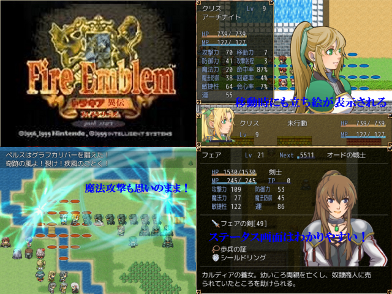

 |
|
| 作者：天野 響 | |
| ジャンル：シュミレーションRPG | |
| ツクール：ツクールVX ace | |
| 作者コメント： このゲームは過去作ファイアーエンブレム、もしもの神に 感激した作者がシュミレーションで作りたいと思った作品です。 FE.BSの類似品、模造品ですので、ご注意ください。 ゲームのシナリオはトラキア776に似ております… その他、他作品からも無理やりもってきています。 オリジナル要素や改変したところもあります。 初めてツクールをしたので、完成度は低いですが、よろしくお願いします！ |
|
| 管理人コメント： とても初々しいです。でも初ツクールでいきなりSRPGに手を出すその気概たるや！ |
|
| ダウンロード(115MB_06/01更新) / 感想掲示板 |
|
| 前の作品 / 次の作品 / TOPへ戻る | |